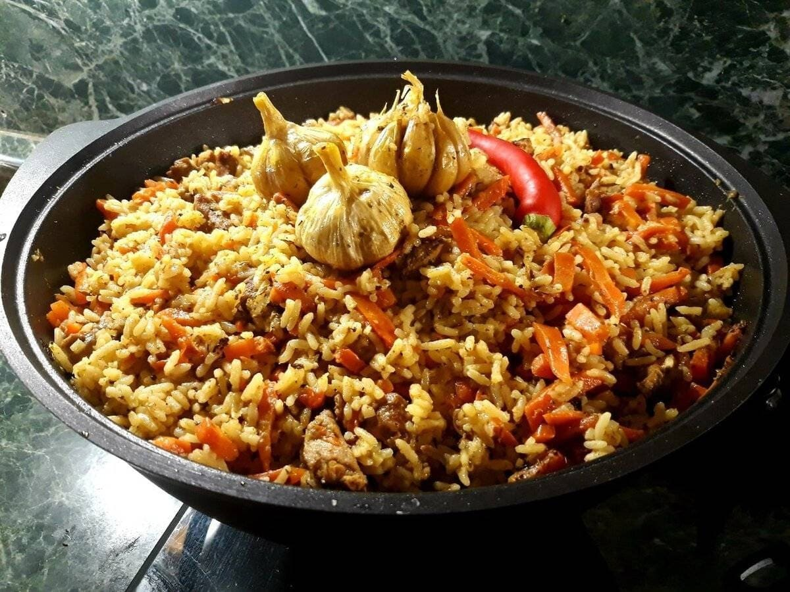

Uzbek Plov

Description:
Plov is a popular Uzbek dish, also referred to as "pilaf" or "palov".
Almost authentic rice and lamb dish for a party from the heart of Middle Asia. Easy and delicious.
Ingridients:
- 2 cups basmati rice
- 4 whole heads garlic
- ½ cup vegetable oil
- 2 pounds boneless leg of lamb, cut into 3-inch pieces
- 2 large onions, thinly sliced
- 5 large carrots, coarsely grated
- ½ cup fresh barberries
- 2 tablespoons cumin seeds
- 2 tablespoons coriander seeds
- 1 teaspoon whole black peppercorns
- 2 cups boiling water to cover
- 2 tablespoons salt
Steps:
-
First step:
- Place basmati rice in a large bowl;
- Cover with warm water and set aside.
- Wash whole heads garlic and set aside.
-
Second step:
- Heat vegetable oil in a Dutch oven or large skillet over high heat until smoking.
- Add lamb; cook, turning occasionally, until evenly browned, about 10 minutes.
- Stir in onions; cook and stir until softened and browned, about 10 minutes.
- Stir in carrots; cook and stir until softened, about 10 minutes.
- Add barberries, cumin, coriander, and peppercorns; drop whole heads garlic into Dutch oven, stirring to evenly distribute.
- Reduce heat to medium. Cover and cook 30 minutes.
-
Third step:
- Wash and drain basmati rice with hot water; add to Dutch oven in an even layer on top of lamb.
- Slowly pour in 2 cups boiling water.
- The rice should be covered with about 3/4-inch water. Do not stir.
- Season with salt; reduce heat to medium-low.
- Cover and cook until rice is tender and liquid absorbed, about 20 minutes.
- Stir rice and lamb together; serve with whole garlic heads on top.
List of recipes